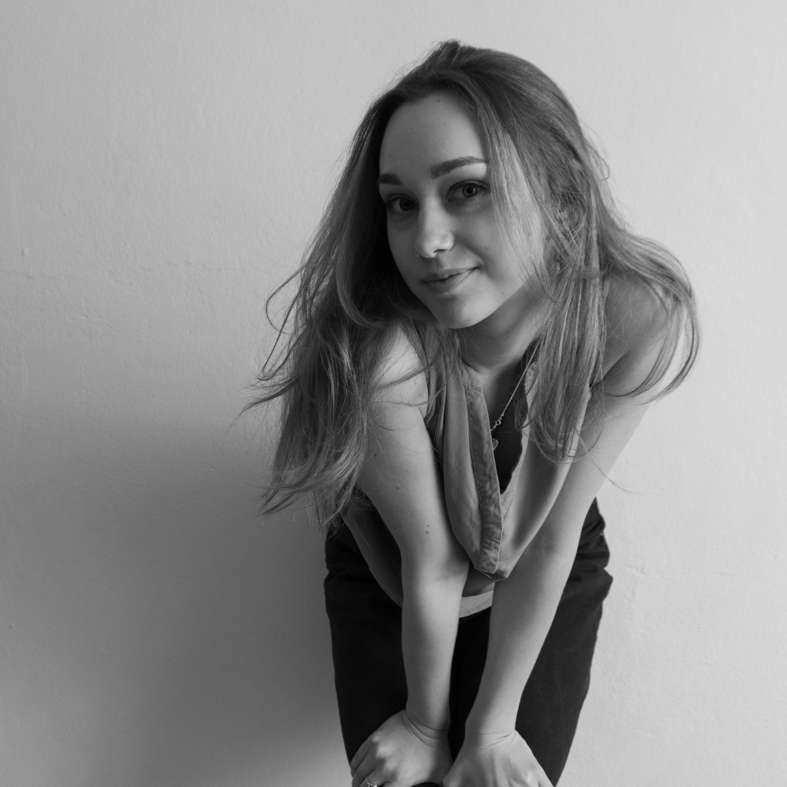

03 / o mnie
Zuzanna
Zajączkowska
Artystka wizualna tworząca na styku tekstu, obrazu, dźwięku i instalacji. W centrum moich zainteresowań znajduje się ludzki umysł – od podświadomości po doświadczenia emocjonalne, duchowe i cielesne. Badam relacje między jednostką a społeczeństwem, analizując, jak kultura kształtuje nasz język, estetykę i tradycje. Szukam uniwersalnych schematów w historii człowieka, stale zadając sobie pytanie o ukryte reguły rządzące naszym życiem.
skontaktuj się